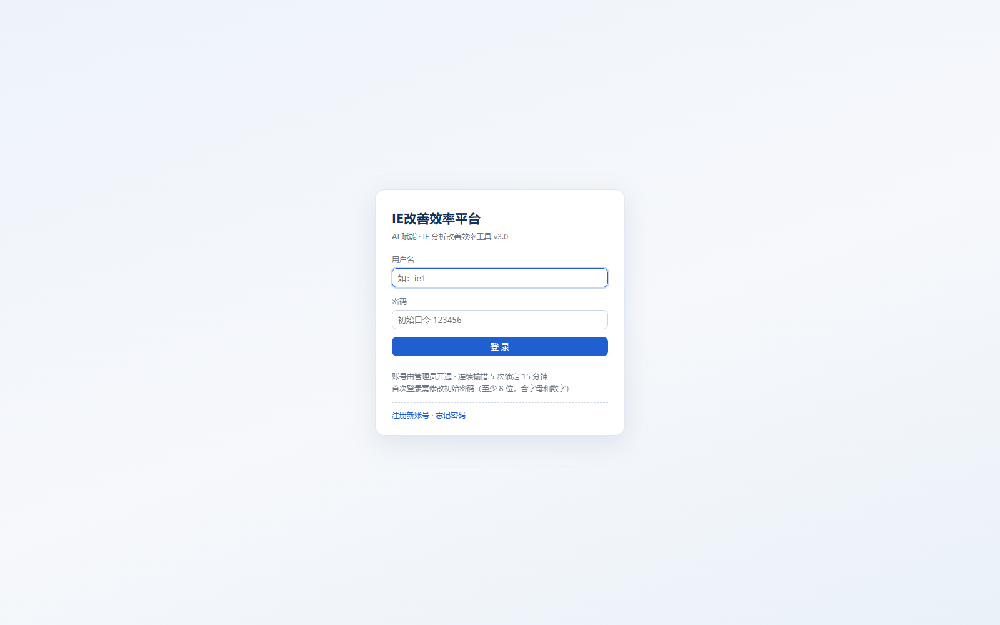
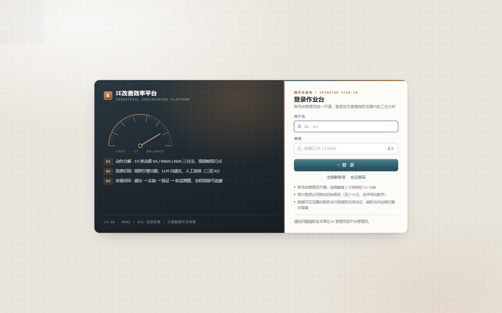
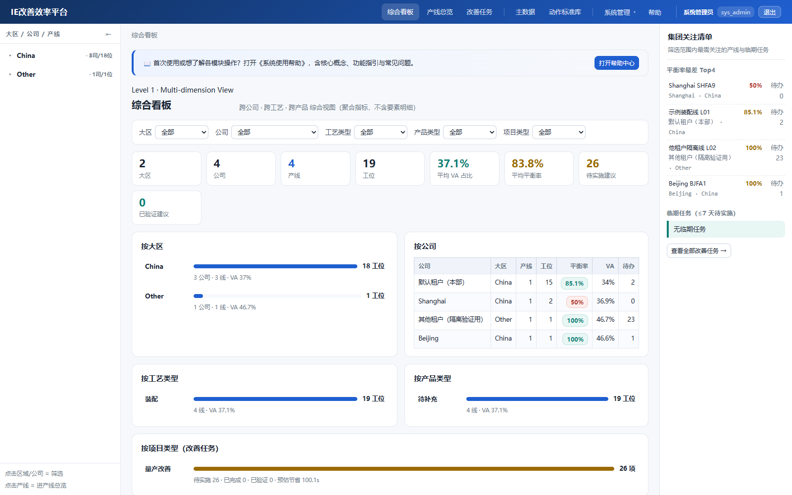
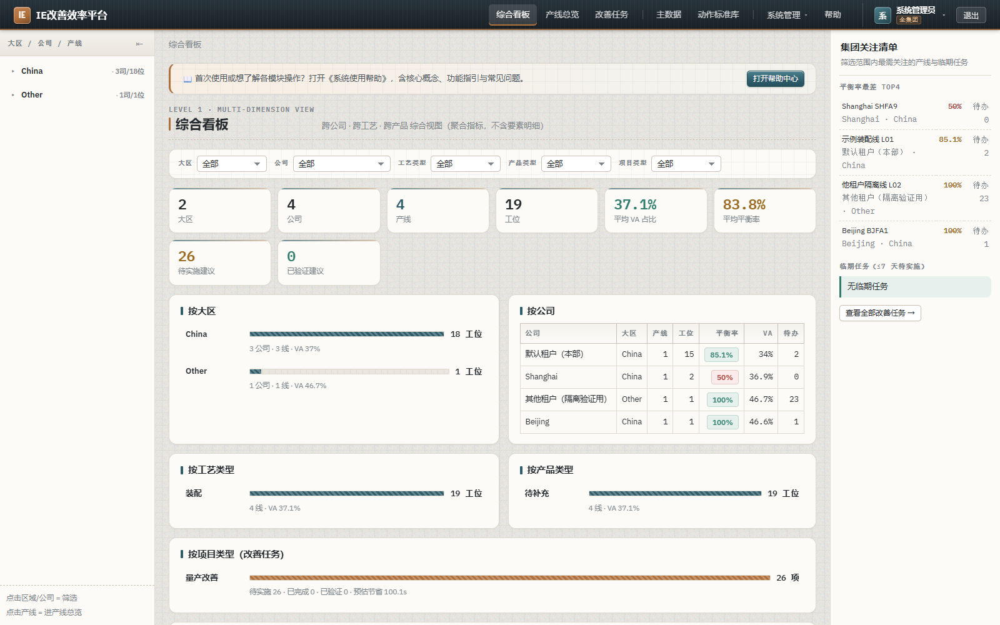
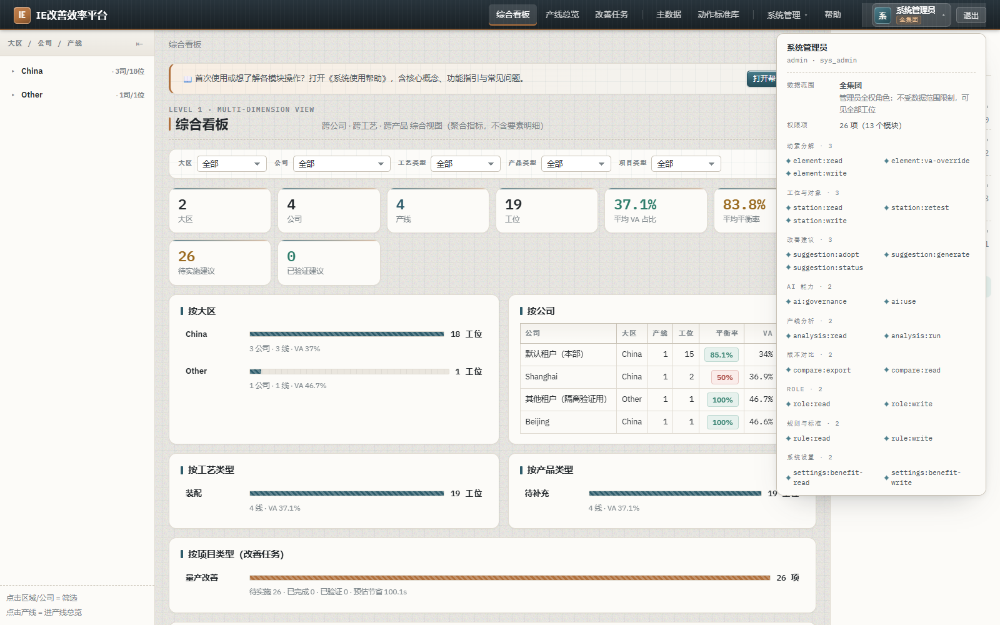
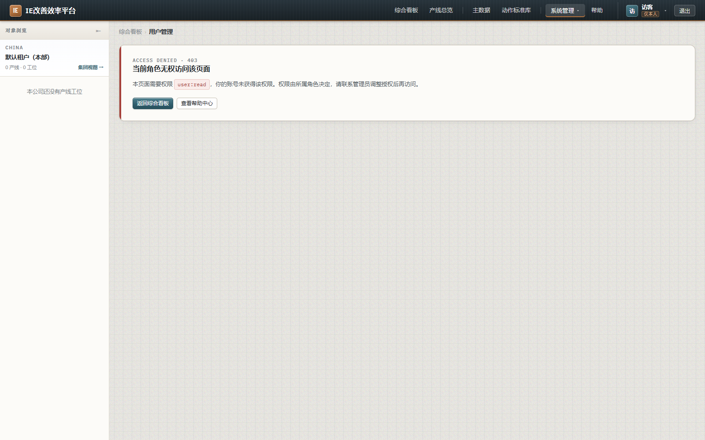

对象：IE 改善效率平台 Web（app/web）· 登录页 + 首页（综合看板 / 产线总览）· 版本 v3.55 → v3.56
原 UI 是「功能完整、表达贫乏」的模板级实现：能跑通全部业务，但在品牌资产、视觉层级、颜色语义、权限可见性四个维度上都没有表达力。本次按柔和工业风（Soft Industrial）重建了样式分层与外壳，并把「权限」从隐藏状态提到顶栏一级信息位。
| 维度 | 现状 | 核心问题 | 本次处置 |
|---|---|---|---|
| 目录结构 | P1 | 单文件 styles.css 2125 行 / 126KB，通用件、外壳、登录、驾驶舱、工作台、AI 混写，改一处要全文搜索 | 拆为 6 层（tokens / base / login / shell / dashboard / legacy），入口文件仅 6 行 @import，类名零变更 |
| 登录页 | P0 | 居中单卡、无 Logo 无图形、只用 1 个蓝、阴影轻到看不见、两张提示文字堆叠 | 双栏「设备铭牌 + 作业单」：深色钢板侧（仪表刻度环 / 能力三条）+ 暖白表单侧（图标输入、密码可见切换、条目化安全须知） |
| 显示风格 | P1 | 冷蓝灰 #f6f8fb + 饱和蓝 #1f5fd0，色彩无辅助色；字体为系统默认；无纹理无层次 | 石灰岩暖灰底 + 搪瓷钢青主色 + 氧化铜点缀；20px 图纸网格 + 噪点；IBM Plex / Barlow Condensed 字体栈；机加工小圆角 |
| 前端要素 | P2 | KPI 八卡等权重平铺；筛选条 5 下拉贴满一行；分布条为纯色圆角条；表格表头无层次 | KPI 加铜色顶线与悬浮；筛选条标签改工业铭牌字；分布条改分段标尺 + 45° 斜纹；表头改小号大写 + 渐隐底 |
| 权限管理显示 | P0 | 顶栏只显示「姓名 + 角色 + 退出」；行级可见范围（v3.55 已生效）前端完全不可见；无权限页只有一行灰字 | 新增顶栏用户组件（头像 + 可见范围徽标 + 权限浮层：模块分组 26 项权限码）；无权限/越权改专用 403 提示卡；后端 /me 补发 dataScope 与 fullAccess |
app/web/src/ ├── styles.css ← 2125 行 / 126KB，唯一样式源，无分层 ├── App.tsx ← 路由 + 外壳（顶栏/三栏）混在一起 ├── api.ts ← 67KB，含 AuthUserVo 等类型 ├── pages/ (20 个页面) └── components/ (16 个组件)
诊断：样式无分层是本次最值得改的结构债——任何配色/间距调整都要全文搜索，且无法按"改登录页不影响工作台"的方式做影响面控制。
app/web/src/styles.css ← 仅剩 6 行 @import（层叠顺序即优先级） app/web/src/styles/ ├── tokens.css 设计令牌：色板 / 字体 / 尺度 / 阴影 / 纹理 / 动效 / 布局常量 ├── base.css 基础层：重置、排版、表单、按钮、标签、表格、卡片、时间线、打印 ├── login.css 认证层：登录 / 注册 / 找回 / 强制改密 / 启动占位 ├── shell.css 外壳层：顶栏、导航、用户与权限区、三栏、对象树、上下文面板 ├── dashboard.css 驾驶舱层：KPI、筛选条、分布卡、横评表、上手引导 └── legacy.css 1692 行页面专有样式（工作台 / AI / 设置 / 用户管理），按页持续拆出 app/web/src/components/UserMenu.tsx 新增：顶栏用户与权限显示组件


| 要素 | 诊断（改造前） | 处置 |
|---|---|---|
| 品牌资产 | 仅一行蓝色文字标题，无 Logo / 图形 / 图标 | 铜色 IE 铭牌标记（顶栏与登录页共用）+ 仪表刻度环 SVG（TAKT/CT/BALANCE） |
| 视觉重心 | 卡片垂直偏上，四周大片空白无承载 | 左栏承载品牌与能力三条，右栏承载表单，横向双栏填满 1000px 容器 |
| 配色层次 | 白 + 灰 + 蓝三色，无辅助色 | 深色钢板 #1E272D × 暖白 #FCFBF8 × 钢青 × 氧化铜四层 |
| 表单控件 | 纯默认输入框，无图标、无状态反馈 | 图标前缀（用户 / 锁）、聚焦 3px 光环、密码「显示/隐藏」切换、提交按钮带铜色短杠与加载转圈 |
| 提示信息 | 两段规则文字直接堆叠，可读性差 | 条目化安全须知（铜色菱形项目符号）：输错锁定 / 首次改密 / 越权拦截留痕 |


工业感来自材质与工艺语汇而非"深色+等宽"的堆砌：拉丝钢顶栏（竖向细纹 + 底部 2px 铜色基线）、图纸网格底纹、机加工定位块、点划线分隔、45° 斜纹进度条、铭牌式小号大写标签；柔和感来自低饱和暖灰基底、小圆角（5/8/12/16）与低透明度大扩散阴影。
| 位置 | 实现 |
|---|---|
| 后端 /api/auth/me | 新增 dataScope 与 fullAccess（全权角色标记）两个只读字段；全权角色集合抽为单一数据源 src/rbac/full-access.ts（此前在 4 处硬编码，口径易漂移），stations.service 改为引用 |
| 顶栏用户区 | 新组件 components/UserMenu.tsx：首字母头像 + 姓名 + 数据可见范围徽标（仅本人 / 本产线 / 本租户 / 全集团） |
| 权限浮层 | 点击头像展开：账号与角色、数据范围（含口径说明）、权限总数与模块数、按模块分组的全部权限码（工位 / 动素 / 改善建议 / 产线分析 / 规则 / 设置 / 用户 / AI …） |
| 无权限页 | 专用 .deny-card：ACCESS DENIED · 403 状态码 + 标题 + 所需权限码标签 + 说明 + 「返回首页 / 查看帮助」出口 |
| 工位越权 | 同上，OUT OF SCOPE · 403：明确说明"自己建立的 / 共享给你的 / 你负责产线上的"三类可见来源 |


| 文件 | 类型 | 说明 |
|---|---|---|
| app/web/src/styles.css | 重构 | 2125 行 → 6 行 @import 聚合入口 |
| app/web/src/styles/tokens.css | 新增 | 柔和工业风令牌（含全部旧变量名兼容映射） |
| app/web/src/styles/base.css | 新增 | 基础层（迁移 + 重做） |
| app/web/src/styles/login.css | 新增 | 认证层（迁移 + 重做） |
| app/web/src/styles/shell.css | 新增 | 外壳层（迁移 + 重做，含权限浮层样式） |
| app/web/src/styles/dashboard.css | 新增 | 驾驶舱层（迁移 + 重做） |
| app/web/src/styles/legacy.css | 新增 | 原文件剩余 1692 行页面专有样式（原样保留） |
| app/web/src/pages/LoginPage.tsx | 重写 | 双栏布局 + 图标输入 + 密码切换 + 条目化须知（业务逻辑与路由不变） |
| app/web/src/components/UserMenu.tsx | 新增 | 顶栏用户与权限显示 |
| app/web/src/App.tsx | 改动 | 接入 UserMenu、品牌加铭牌标记、帮助链移出下拉、两处拒绝态改 403 卡 |
| app/web/src/api.ts | 改动 | AuthUserVo 补 dataScope / fullAccess（可选字段，旧服务兼容） |
| app/web/index.html | 改动 | 字体（Barlow Condensed / IBM Plex）非阻塞加载，离线自动回落 |
| app/api/src/auth/auth.controller.ts | 改动 | /me 增补 dataScope + fullAccess |
| app/api/src/rbac/full-access.ts | 新增 | 全权角色单一数据源 |
| app/api/src/modules/stations/stations.service.ts | 改动 | 改为引用共享全权角色常量（行为不变） |